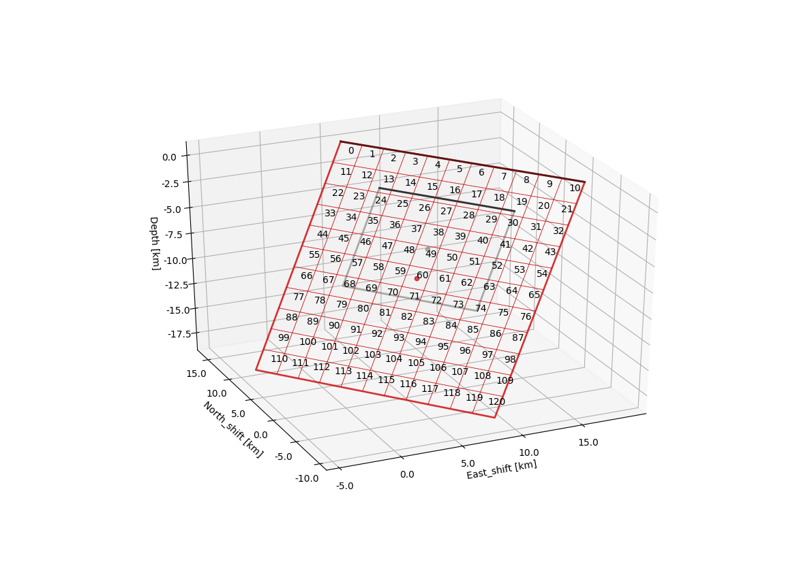
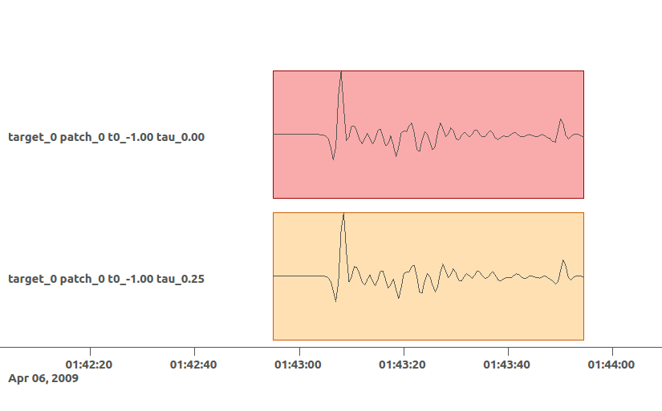

Example 5: Kinematic finite-fault estimation¶
It is a requirement to have Example 3 and 4 completed in order to follow the instructions and commands given in this Example. The data is the exact same from Example 2, where the overall geometry of the fault plane was estimated. In Example 4 we solved for variable slip on the optimum fault geometry from Example 3 by using static InSAR data. We will use the posterior marginals from Example 4 and use them as priors in this Example. Here we will determine a kinematic variable slip distribution including rupture propagation for the L’Aquila 2009 earthquake by using static InSAR data jointly with teleseismic displacement waveforms.
Please make sure that you are one level above the Laquila project folder (created earlier).:
cd $beat_models_path
Clone config¶
We want to use the setup that we used for Example 4, but additionally we want to include the teleseismic data. So we generate a new project folder Laquila_kinematic cloning the previous config_ffi.yaml from the Laquila project_directory with:
beat clone Laquila Laquila_kinematic --mode=ffi --datatypes=geodetic,seismic
The new config_ffi.yaml will have an additional seismic_config and the problem_config includes priors for the kinematic rupture properties: velocities, durations, nucleation_strike, nucleation_dip, time as well as additional noise scalings for the seismic data in the hyperparameters.
Import results¶
In this step we want to import the results from the previous two optimizations to the configuration file. Firstly, we want to import the results from Example 3(geometry optimization). But this time also the seismic_config is updated:
beat import Laquila_kinematic --results=Laquila --mode=geometry --datatypes=geodetic,seismic
Now as we have two datatypes there are two reference_sources arguments in the config_ffi.yaml, one under geodetic_config.gf_config and another under seismic_config.gf_config. However, as you can see by the yaml coding (id001) these two are referring to the same object:
...
gf_config: !beat.GeodeticLinearGFConfig
store_superdir: /home/vasyurhm/GF/Laquila/
reference_model_idx: 0
n_variations: [0, 1]
earth_model_name: ak135-f-continental.m
nworkers: 4
reference_sources:
- &id001 !beat.sources.RectangularSource
lat: 42.29
lon: 13.35
north_shift: 5542.073672733207
east_shift: 10698.176839272524
elevation: 0.0
depth: 2926.702988951863
time: 2009-04-06 01:32:49.190000
stf: !pf.HalfSinusoidSTF
duration: 0.0
anchor: -1.0
stf_mode: post
strike: 144.48588106798306
dip: 54.804317242125464
rake: -114.58259929068664
length: 12219.56636799338
width: 9347.802691161543
velocity: 3500.0
slip: 0.5756726498300268
...
gf_config: !beat.SeismicLinearGFConfig
store_superdir: /home/vasyurhm/GF/Laquila/
reference_model_idx: 0
n_variations: [0, 1]
earth_model_name: ak135-f-continental.m
nworkers: 4
reference_sources:
- *id001
patch_widths: [2.0]
patch_lengths: [2.0]
...
Editing the reference_sources this way ensures consistent geometry for all datatypes (maybe in the future there are more to be added…). Now please make sure that also the arguments patch_widths and patch_lengths as well as the extension_widths and extension_lengths are consistent! The discretization at this point could be changed of course. However, this would then not allow to import the results from Example 4(ffi optimization), which we want to do next:
beat import Laquila_kinematic --results=Laquila --mode=ffi --datatypes=geodetic,seismic
You will notice now that the lower and upper bounds of the slip parameters uparr and uperp have been updated. Each sub-patch has indiviudal bounds where the index in the array refers to the patch number in the geometry and discretization figure shown in Example 4. As a short recap here again.
Note
We could not reproduce the plot yet right away as we did not create the fault_geometry.pkl object yet.
Calculate Green’s Functions¶
Elementary GFs¶
Now the Green’s Functions store(s) have to be calculated again for the geometry problem with higher resolutions. Please remember Example 3. There the optimization was run using Green’s Functions depth and distance sampling of 4km with 0.5Hz sampling. This may be accurate enough for the geometry type of optimization, however, for a finite fault optimization the aim is to resolve details of the rupture propagation and the slip distribution. So the setup parameters of the geometry Green’s Functions would need to be changed to higher resolution. In this case we want to use wavelengths of up to 0.5Hz ergo a depth and distance sampling of 1 km and 2Hz sample rate may be precise enough. Of course, these parameters depend on the problem setup and have to be adjusted individually for each problem! So please open the Laquila/config_geometry.yaml and edit the parameters accordingly. Running this calculation will take a long time depending on the number of CPUs at hand. (With 25 CPUs the calculation took approximately 15Hrs):
beat build_gfs Laquila --datatypes='seismic' --execute
Data windowing¶
- Now we need to decide on the post-processing parameters of the data and synthetics, i.e.:
- which phase arrivals
- which channels to use
- bandpass filtering parameters
- tapering- ergo time window around phase arrival
We can adjust all these setting under the wavemaps listed in the seismic_config.waveforms attribute:
waveforms:
- !beat.WaveformFitConfig
include: true
preprocess_data: true
blacklist: []
name: any_P
channels: [Z]
filterer: !beat.heart.Filter
lower_corner: 0.001
upper_corner: 0.5
order: 4
distances: [30.0, 90.0]
interpolation: multilinear
arrival_taper: !beat.heart.ArrivalTaper
a: -15.0
b: -10.0
c: 50.0
d: 55.0
Here we see that we use the any_P phase, i.e. P waves on the Z component (under channels), with a bandpass-filter between 0.001 and 0.5 Hz. All the stations in a distance range of 30-90 degrees. If we wanted to throw out a station from the setup, we could write the station name in the blacklist as a string. The data that is used for the posterior likelihood calculation is defined by the arrival_taper b and c value, i.e. here 10 seconds before and 50 seconds after the synthetic P-wave arrival (relative to the event location).
All these values are fine for now- of course the user may change them as it pleases.
To inspect the filtered and tapered data that is being actually used in the optimization execute:
beat check Laquila_kinematic --what=traces --mode=ffi
The first two traces are the full unfiltered data in full length and the tapered filtered data as will be used in the optimization. If the user is not happy with one or the other parameters they can be adjusted and then the beat check command as above should be executed again until everything is set-up to the satisfaction of the user.
Note
The bandpass-filter and taper parameters will be used as well in the next step to calculate the linear Gfs.
GF Library¶
In the next step again Green’s Functions have to be calculated. What? Again? That’s right! Now they need to be calculated for the fixed fault geometry (remember Example 4). Firstly, we create the discretized fault, this time for seismic and geodetic data:
beat build_gfs Laquila_kinematic --datatypes=seismic,geodetic --mode=ffi
Parts of the output might look like:
2018-11-03 15:28:00,164 - ffi.fault - INFO - Discretizing seismic source(s)
2018-11-03 15:28:00,164 - ffi.fault - INFO - uparr slip component
2018-11-03 15:28:00,164 - sources - INFO - Fault extended to length=22000.000000, width=22000.000000!
2018-11-03 15:28:00,164 - sources - INFO - Fault would intersect surface! Setting top center to 0.!
2018-11-03 15:28:00,165 - ffi.fault - INFO - Extended fault(s):
--- !beat.sources.RectangularSource
lat: 42.29
lon: 13.35
north_shift: 6741.193145771676
east_shift: 12378.404380741504
elevation: 0.0
depth: 0.0
time: 2009-04-06 01:32:49.19
stf: !pf.HalfSinusoidSTF
duration: 0.0
anchor: -1.0
stf_mode: post
strike: 144.48588106798306
dip: 54.804317242125464
rake: -114.58259929068664
length: 22000.0
width: 22000.0
velocity: 3500.0
slip: 1.0
Here we see that due to the extension parameters got extended to 22.0 times 22.0 [km].
For the geodetic GF library these from the Laquila project_directory could be also copied/linked, but for now we just recalculate it.:
beat build_gfs Laquila_kinematic --datatypes=geodetic --execute --mode=ffi
For the seismic GF library we need to specify temporal parameter bounds of the source(s). As the forward calculation has to be as fast as possible as much as possible has to be pre-calculated. Therefore, the effects of the source-time-function on the waveforms has to be included in the library. The consequence is that we have a library that has additional dimensions for the possible source durations (risetimes) of each patch.
These can be specified for all the patches under the durations prior. In order to keep the library at feasable sizes these values should be reasonable compared to the size of the earthquake. Example: For a magnitude Mw 6 earthquake we do not expect risetimes of 20s… Please set the lower and upper bounds of the durations to 0. and 4. seconds, respectively.
Also we need to specify the bounds on the rupture velocities. The shear-wave velocity from the velocity model is a good proxy for that. So please set the lower and upper bounds on the velocities to 2.2 and 4.5 [km/s], respectively. These velocities are sampled for each patch individually and indirectly determine the rupture onset time of each patch depending on the hypocentral location (nucleation_dip and nucleation_strike). To assure causal rupture propagation starting from the hypocentre the Eikonal equation is solved each forward calculation, which then determines the rupture onset time on each patch [Minson2013].
So far we defined everything with respect to the hypocentre, but we have to keep in mind that its location and the hypocentral time are unknowns as well. The time-shift with respect to the event.time has been determined in Example 3 before roughly assuming constant rupture velocity and uniform slip on the RectangularSource. Likely, the refined hypocentral time in this optimization will be converging to a similar time estimate as previously determined. This previously determined timing information has been imported as well in the ‘import results’ - step. However, these bounds should be relaxed again as we are using different frequency content in the data and we allow for a much complexer optimization setup. Please set the lower and upper bounds for the time to -13. and 0., respectively.
Finally, we are left with specifying the duration_sampling and starttime_sampling under the seismic_config.gf_config. These determine the steps taken between the upper and lower bounds for the durations and the discrete starttime-shifts. Please set the duration_sampling to 0.25. As we are using GFs with 2Hz setting the starttime_sampling to full discrete time samples of 0.5 is reasonable.
The interpolation attribute determines the interpolation method that is used to interpolate the GFs at values in between the pre-calculated waveforms. Please use multilinear for higher-precission and nearest_neighbor if the calculation has to be fast.
Now we are ready to calculate the seismic GF library. Depending on the priors and the number of CPUs (nworkers you want to specify under the seismic_config.gf_config) this calculation may take from few minutes to hour(s).:
beat build_gfs Laquila_kinematic --datatypes=seismic --execute --mode=ffi
Warning
The seismic GF libraries can become very fast very big if the prior bounds are set too wide. These matrixes (two, i.e. one for each slip-component) have to be able to fit in the memory of your computer during sampling.
- Like for the geodetic GFs this will create three files for each GF library in the $linear_gfs directory:
- seismic_uparr_static_0.traces.npy a numpy array containing the linear GFs
- seismic_uparr_static_0.yaml a yaml file with the meta information
- seismic_uparr_any_P_0.times.npy a numpy array containing the start-times of each trace
For visual inspection of the resulting seismic traces in the snuffler waveform browser:
beat check Laquila_kinematic --what='library' --datatypes='seismic' --mode='ffi'
This will load the seismic traces for the first station (target), for all patches, durations and starttimes.
Here we see the slip parallel traces for patch 0, at starttime (t0) of -1s (after the hypocentral source time wrt. the event.time (see time explanation above) and slip durations(tau) of 0. and 0.25[s].
Sample the solution space¶
Please refer to the ‘Sample the solution space section’ of Example 3 Example for a more detailed description of the sampling and associated parameters.
Firstly, we only optimize for the noise scaling or hyperparameters (HPs) including the laplacian smoothing weight:
beat sample Laquila_kinematic --hypers --mode=ffi
Checking the $project_directory/config_ffi.yaml, the hyperparameter bounds show something like:
hyperparameters:
h_SAR: !beat.heart.Parameter
name: h_SAR
form: Uniform
lower: [-1.0]
upper: [5.0]
testvalue: [2.0]
h_any_P_0_Z: !beat.heart.Parameter
name: h_any_P_0_Z
form: Uniform
lower: [0.0]
upper: [4.0]
testvalue: [1.5]
h_laplacian: !beat.heart.Parameter
name: h_laplacian
form: Uniform
lower: [-5.0]
upper: [5.0]
testvalue: [0.5]
Markov Chain initialization¶
The initialization argument determines at which point in the solution space to initialize the Markov Chains. In Example 4 we set this argument to lsq. Here we are going to use random again, please set it now! We initially narrowed down the slip-parameters by importing the results from Example 4. Thus, we already have a pretty good estimate on how the slip-distribution should look like, explaining the geodetic data reasonably well.
The n_jobs number should be set to as many CPUs as the user can spare under the sampler_config. The number of sampled MarkovChains and the number of steps for each chain of the SMC sampler should be set to high values as we are optimizing now for ca 500 random variables (if the values from the tutorial haven’t been altered by the user); for example to 8000 and 400, respectively.
Warning
With these sampler parameters a huge amount of samples are going to be stored to disk! Please see Example 3 for an instruction on how to keep only the important samples to reduce the disk usage.
Finally, we are set to run the full optimization for the static slip-distribution with:
beat sample Laquila_kinematic --mode=ffi
Summarize and plotting¶
After the sampling successfully finished, the final stage results have to be summarized with:
beat summarize Laquila_kinematic --stage_number=-1 --mode=ffi
After that several figures illustrating the results can be created.
For the kineamtic slip-distribution please run:
beat plot Laquila_kinematic slip_distribution --mode=ffi

Compared to Example 4 we also see here the location of the hypocentre (black star) as well as the fuzzy rupture fronts based on the posterior ensemble of solutions.
To get histograms for the parameters of individual patches use the –source_idxs option(here: 15, 51 and 67) please run:
beat plot Laquila_kinematic stage_posteriors --mode=ffi --force --stage_number=-1 --varnames=uparr,uperp,durations,velocities --source_idxs=15,51,67
For a comparison between data, synthetic displacements and residuals for the two InSAR tracks in a local coordinate system please run:
beat plot Laquila_kinematic scene_fits --mode=ffi
The plot should show something like this. Here the residuals are displayed with an individual color scale according to their minimum and maximum values.
For a plot using the global geographic coordinate system where the residuals have the same color bar as data and synthetics please run:
beat plot Laquila_kinematic scene_fits --mode=ffi --plot_projection=latlon

For the waveformfits:
beat plot Laquila_kinematic waveform_fits --mode=ffi
For the fuzzy moment rate function:
beat plot Laquila_kinematic moment_rate --mode=ffi

Here the MAP moment rate function is displayed by the black solid line.
Animation¶
In the development version of beat the following command Will also export a file: “rupture_evolution_max.yaml” to $project_directory/ffi/results.
beat export Laquila_kinematic --mode=ffi
This file can be loaded into the GeometryElement of the Sparrow, which is also under development but a first introduction is given here.
An animation of the MAP result of the rupture within the Sparrow then looks like this. Each second in the video after the rupture starts, is also a second in the rupture propagation.: